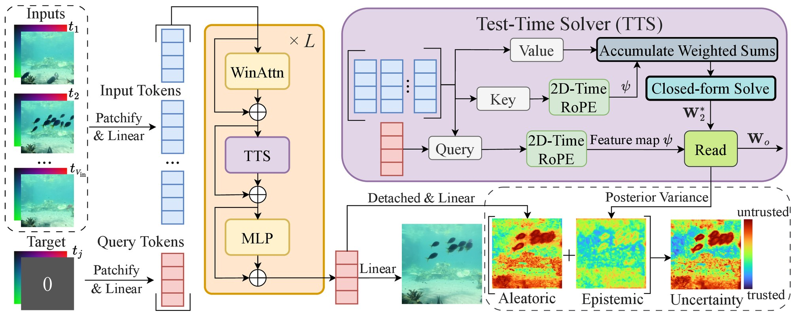
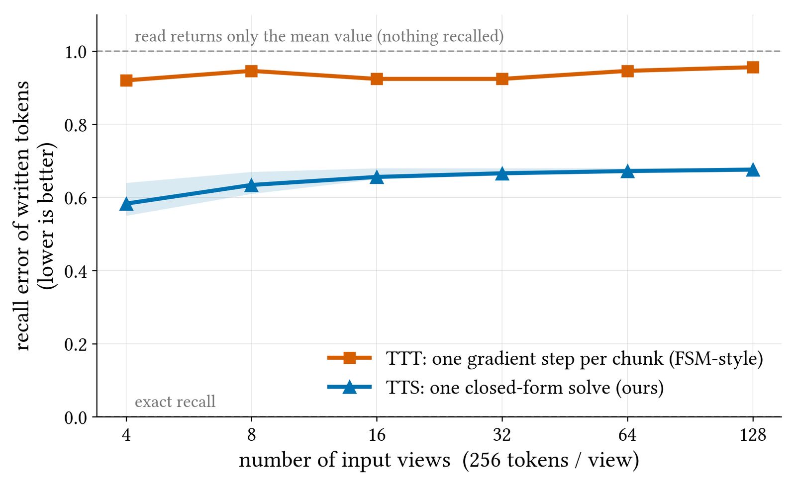
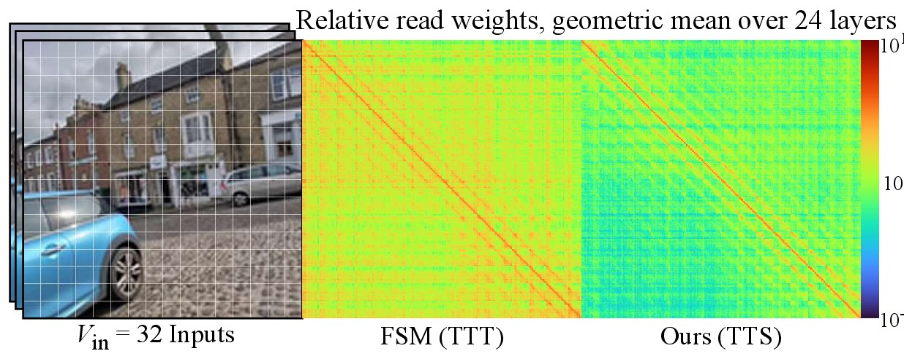
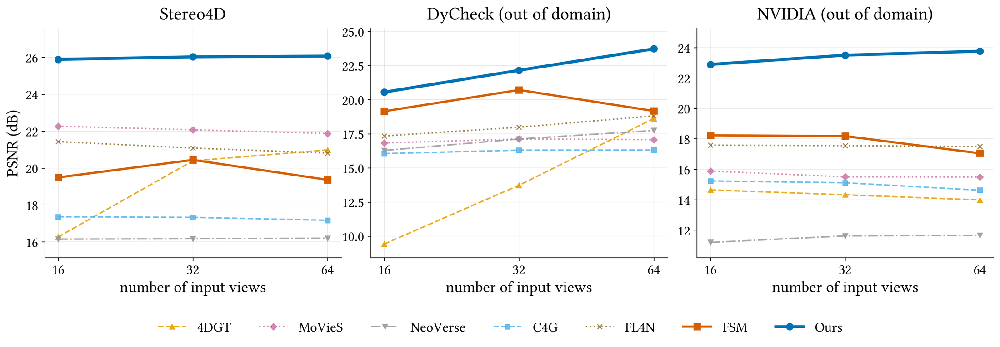
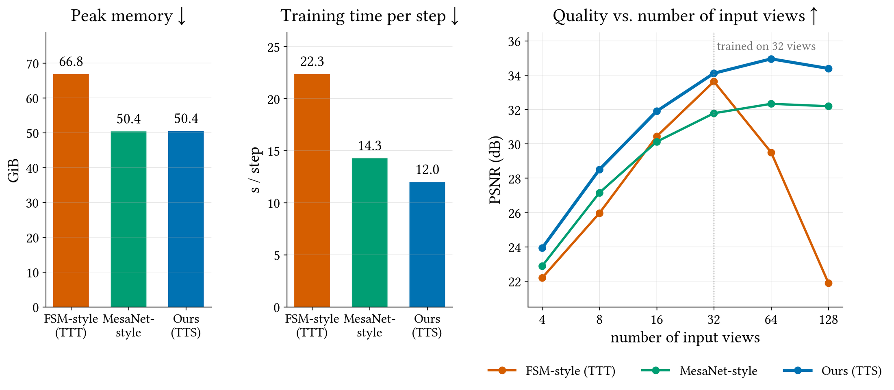
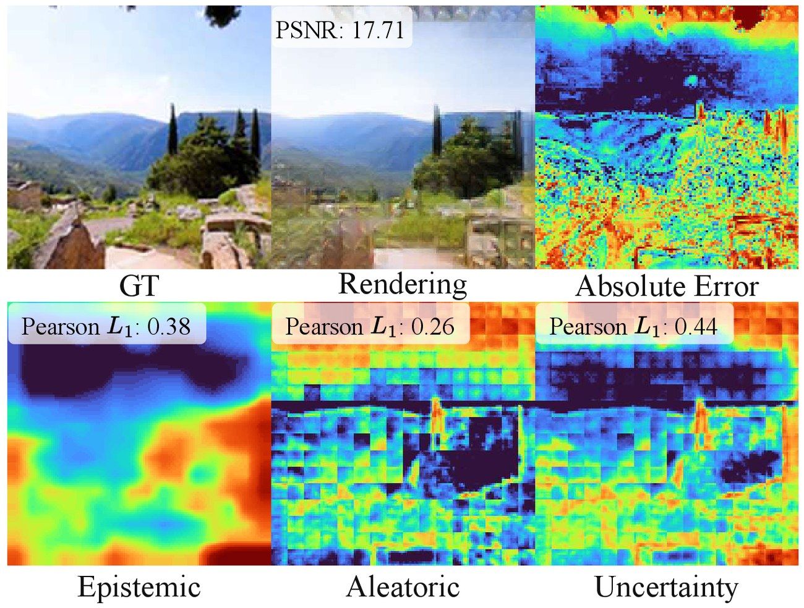

01Results video
02Abstract
4D novel view synthesis (NVS) methods require many input frames to faithfully reconstruct long, complex, and dynamic scenes. However, current Transformer-based methods are bottlenecked by the quadratic scaling of softmax attention. Test-time training (TTT) attempts to address this limitation by compressing tokens into fast weights at linear cost, but introduces a dependency on token order that can affect performance, as well as the need for gradient-based optimization at inference time. We propose a novel Test-time solver (TTS) layer that solves the same fitting via a closed-form expression, resulting in an order-invariant approach that trains nearly 2× faster than comparable TTT models. Our TTS solution also naturally allows us to represent uncertainty in the model's predictions, a desirable capability given that NVS is highly under-constrained as parts of a scene may not be visible in the input images. By combining an epistemic term from our solver's posterior with a learned aleatoric term, we can generate an uncertainty map in a feed-forward manner. Our approach sets a new state of the art on multiple 4D NVS benchmarks across different scene types, image resolutions, and numbers of input views. In addition, our uncertainty maps correlate with parts of the image where the model's predictions are inaccurate, providing an important step toward reliable 4D NVS.
03Method
Attention does not scale
Softmax attention compares every pair of tokens: 64 views at 512² already give 262K tokens.
TTT: one step per chunk
Test-time training writes tokens into fast weights with one gradient step per chunk. Reads return a blend of all values, and the memory depends on the order.
TTS: solve, don't step
We keep one linear fast weight and solve the ridge fit in closed form from five weighted sums: exact, order-invariant, fixed size.

Gaussian noise + Gaussian prior ⇒ minimizing LTTS is the MAP estimate, and the posterior covariance of W2 is σ²P−1.


04Interactive comparisons
Pick a scene, then pick a baseline. Every method gets exactly the same posed inputs and renders the same novel space-time camera path. Videos load only when you select them.
† C4G takes no cameras; we align its poses at test time. Uncertainty colors: log-variance, blue = certain, red = uncertain.
05Robustness
More input views
Stereo4D, 512×512. TTT interference accumulates with more views; the solve does not.
Higher resolution
Stereo4D, 16 input views. Doubling the resolution gives 4× the tokens per view.
06Results


“Accurately writing tokens into memory matters as much as designing a more complex memory.”
07Uncertainty
Epistemic: from the solver's posterior
The write is a Bayesian linear regression; the solve is its MAP estimate. A read's posterior variance is large where no input supports it — hidden surfaces, regions outside all views, or times far from all inputs — and costs one triangular product.
Aleatoric: learned
A small head predicts what the inputs cannot explain: fine texture, reflections, fast motion. The two are nearly uncorrelated, and their sum tracks the error best at every number of views.

Application: active view selection
Mip-NeRF 360 bonsai, 4 → 20 views. Our uncertainty picks the next camera; it beats random selection on held-out views.
Try it live
Fly through dynamic and static scenes in your browser: move the camera, scrub time, change the number of input views, and inspect the uncertainty. Rendered on a single cloud GPU and streamed to you.
08BibTeX
@article{wang2026tts,
title = {A Test-Time Solver for Uncertainty-Aware 4D Novel View Synthesis},
author = {Wang, Miaowei and Cao, Zhi and Xu, Jingwei and Mac Aodha, Oisin and Vaxman, Amir},
journal = {arXiv preprint},
year = {2026}
}